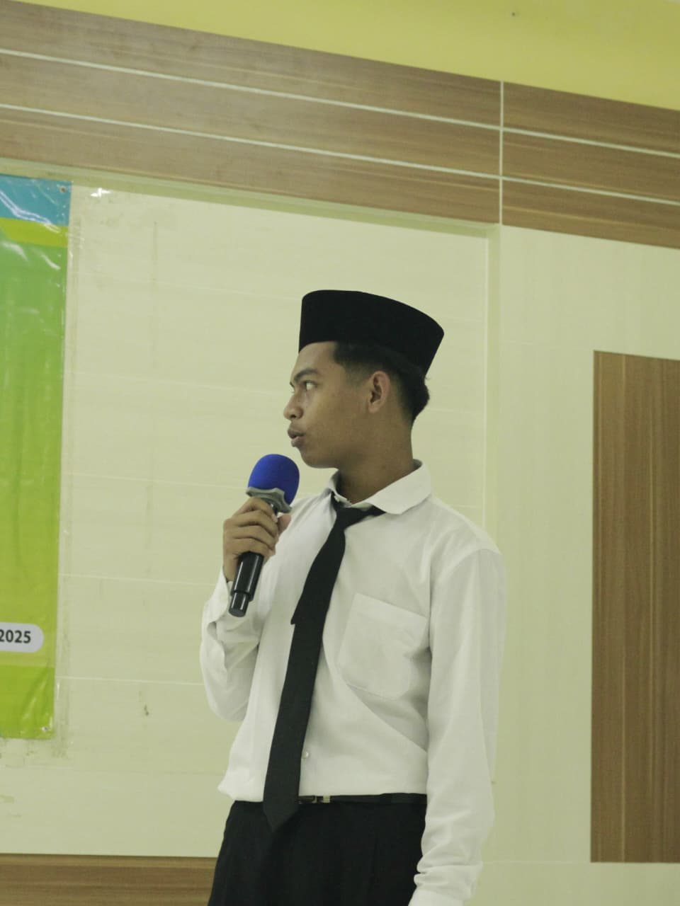
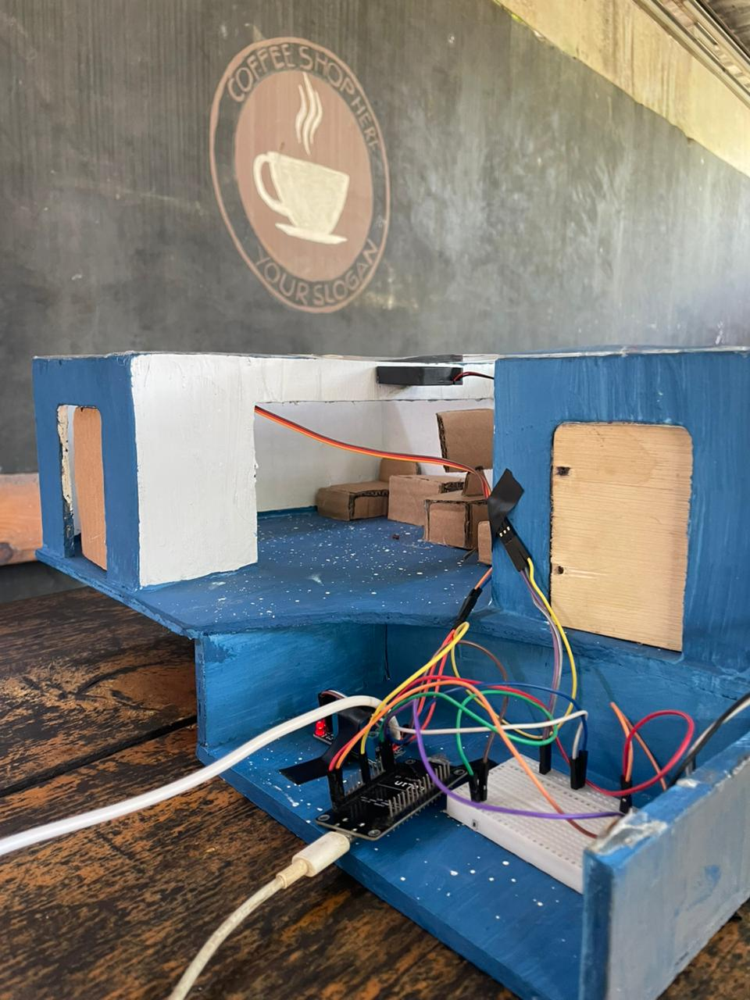
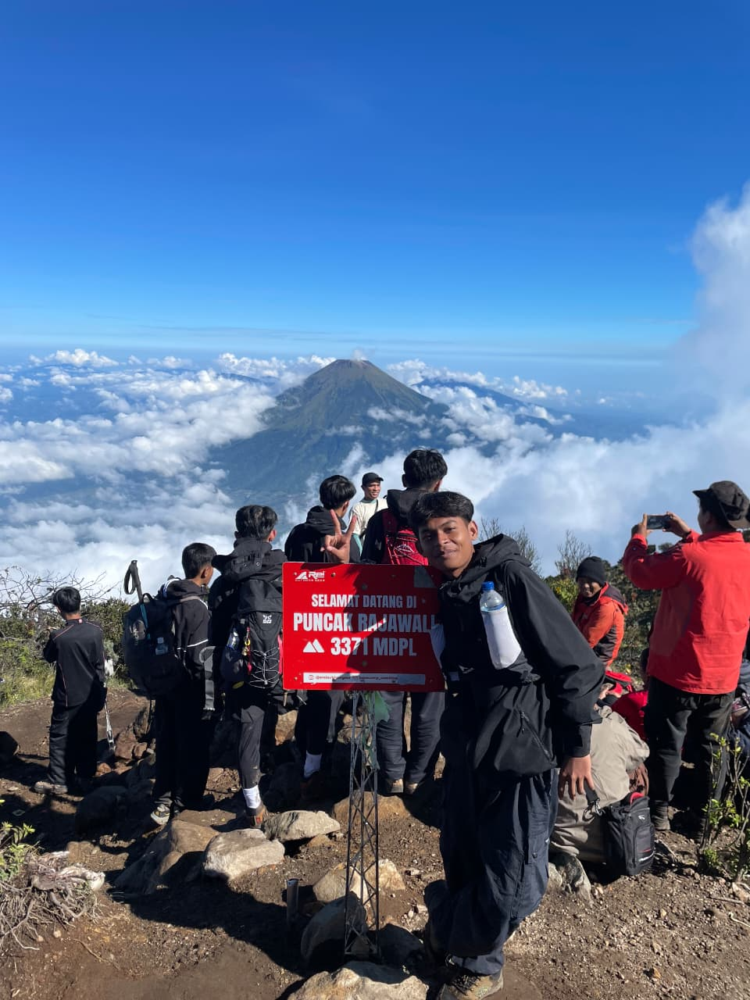
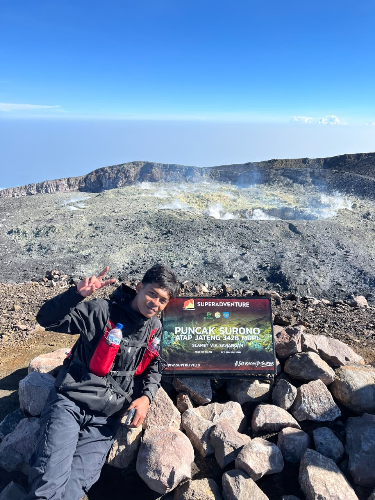
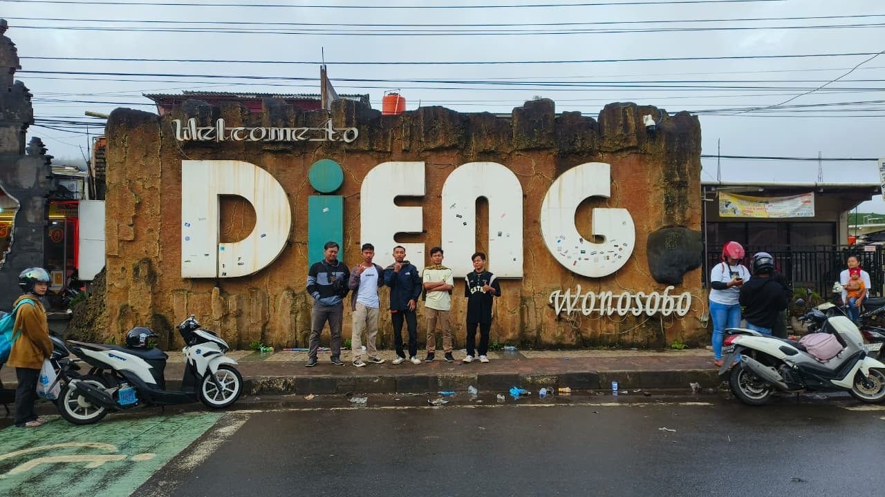
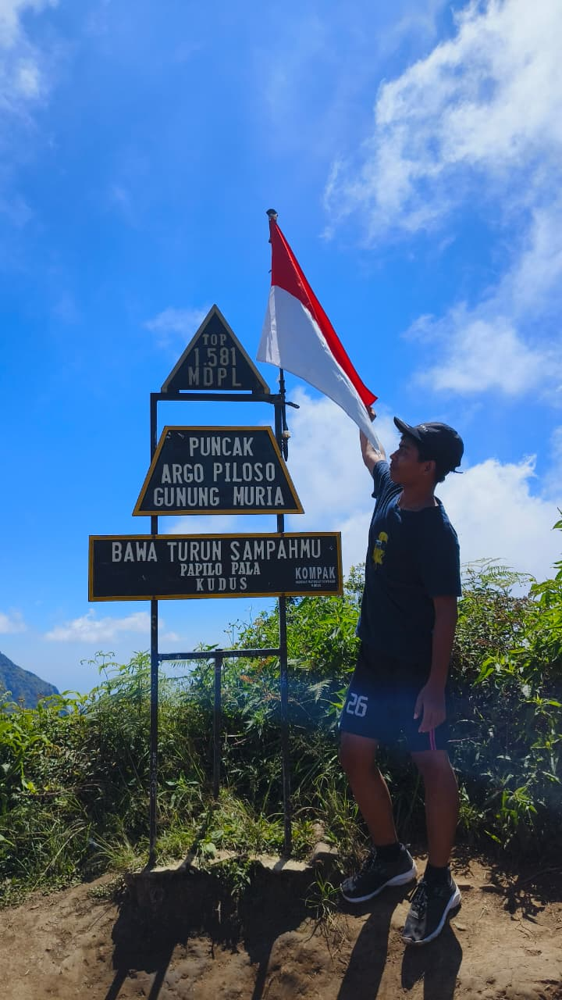
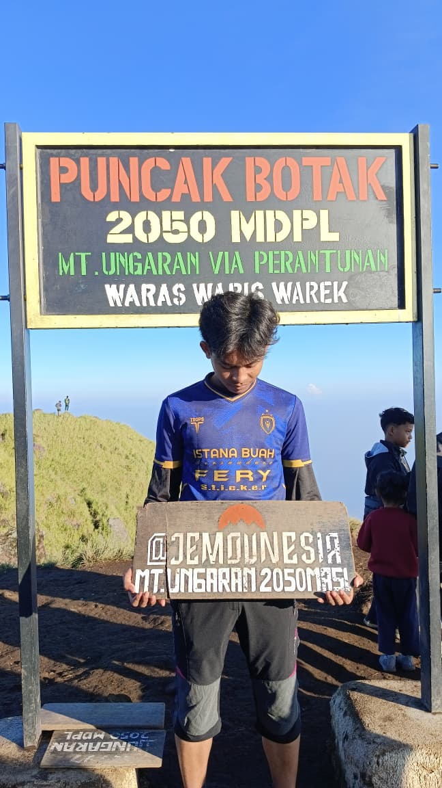
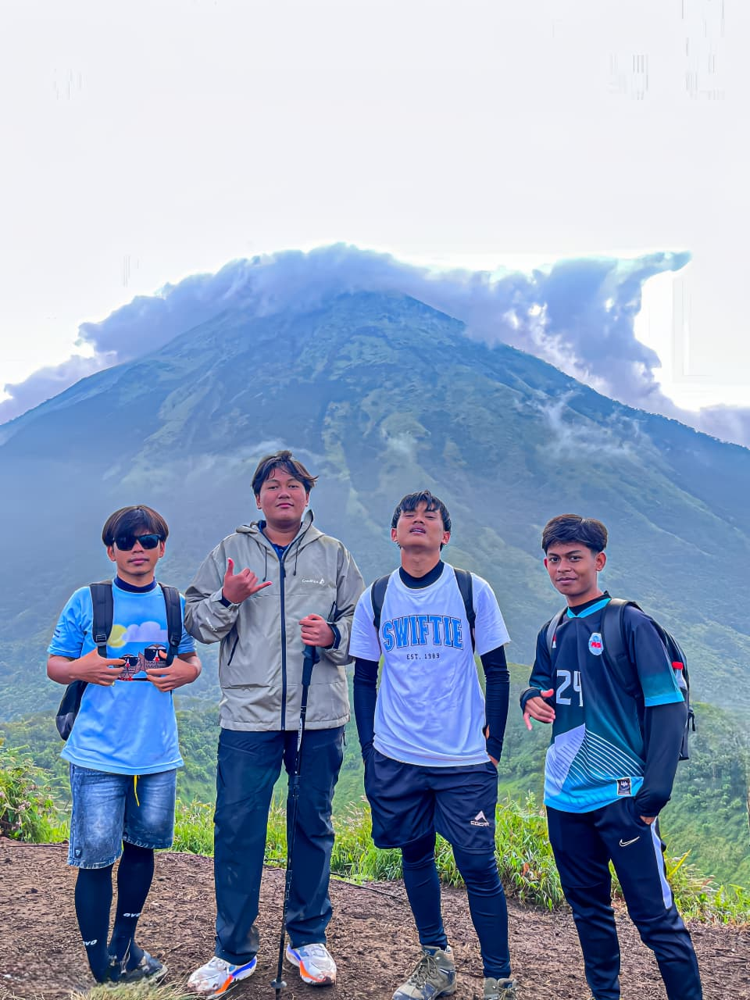
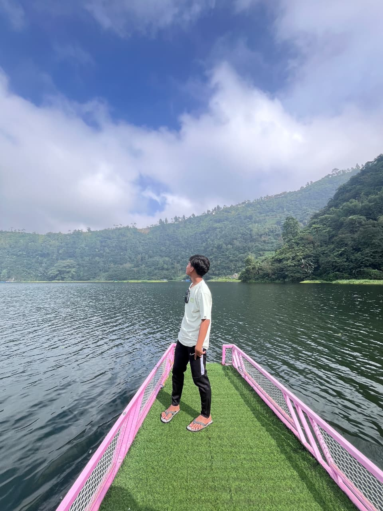
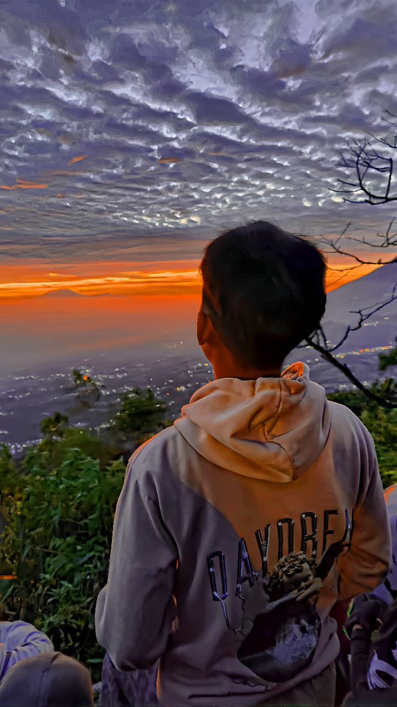

Foto project #01
#01
#01MikroTik Parent Panel
Networking
Panel web untuk mengatur penggunaan internet anak berdasarkan perangkat, terhubung ke MikroTik.
PHPMySQLRouterOS API
Open to Learning & Projects
Hello, I'm
Network & Technology Enthusiast
Membangun, belajar, dan mengeksplorasi dunia teknologi melalui jaringan, hardware, software, dan berbagai project nyata.

Saya adalah siswa Teknik Jaringan Komputer dan Telekomunikasi yang memiliki ketertarikan pada networking, MikroTik, hardware, dan pengembangan website.
Saya senang belajar melalui project nyata, mencoba hal baru, dan memahami bagaimana sebuah sistem bekerja dari dasar hingga dapat digunakan.
Di luar teknologi, saya juga menikmati perjalanan, touring, dan mendaki gunung. Bagi saya, perjalanan bukan sekadar tempat untuk pergi, tetapi bagian dari proses untuk terus berkembang.
Project yang saya kerjakan sebagai bagian dari proses belajar dan pengembangan kemampuan.
#01Networking
Panel web untuk mengatur penggunaan internet anak berdasarkan perangkat, terhubung ke MikroTik.

#02Hardware / IoT
Prototype berbasis ESP8266 untuk mengontrol LED, kipas DC, dan servo motor.
Dua project ini menjadi bagian dari proses saya untuk belajar, mencoba, dan memahami teknologi melalui praktik langsung.
Saya masih belajar. Ini bidang yang sedang saya tekuni.
Masih terus berkembang, ini yang sedang saya pelajari sekarang.
Beberapa perjalanan yang saya simpan sebagai bagian dari cerita.
8 gunung · 4 tempat touring
Pendakian · 2026

“Tidak semua perjalanan harus cepat. Ada kalanya, pelan justru membuat kita lebih mengerti ke mana sedang menuju.”
Pendakian · 2026

“Di atap Jawa Tengah, saya belajar bahwa semakin tinggi kita melangkah, semakin kecil alasan untuk merasa paling tinggi.”
Pendakian · 2025 · 3.265 mdpl
“Di tempat ini, usia saya bertambah bersama langkah yang panjang. Bukan hanya bertambah umur, tetapi juga belajar bahwa hidup bukan tentang seberapa cepat sampai, melainkan tentang apa yang kita temukan di sepanjang jalan.”
Pendakian · 2025
“Langkah kecil mungkin terasa tidak berarti hari ini, tetapi ketika menoleh ke belakang, ternyata kita sudah berjalan sejauh itu.”
Pendakian · 2025 · 2.590 mdpl
“Ada perjalanan yang melelahkan tubuh, tetapi justru meninggalkan sesuatu yang membuat hati ingin mengingatnya kembali.”
Touring · 2025

“Tidak semua perjalanan harus jauh. Kadang, tempat sederhana cukup untuk membuat kita berhenti sejenak dan menyadari betapa banyak hal telah terlewat.”
Touring · 2025
“Perjalanan sederhana pun bisa menjadi berarti, ketika kita benar-benar hadir di dalamnya, bukan sekadar melewatinya.”

4 fotoPendakian · 2025–2026

2 fotoPendakian · 2.050 mdpl · 2025

Pendakian · 2025

2 fotoTouring · 2025

Touring · 2025
Places I'd Return To
“Ada gunung yang selalu ingin saya datangi lagi, bukan karena belum puas, tetapi karena setiap perjalanan meninggalkan cerita yang berbeda.”
Mungkin kita tidak berada di perjalanan yang sama, tetapi selalu ada cerita yang bisa dibagikan.
“Saya mungkin masih dalam proses belajar, tetapi saya akan terus mencoba, terus berjalan, dan terus membuat sesuatu yang berarti.”